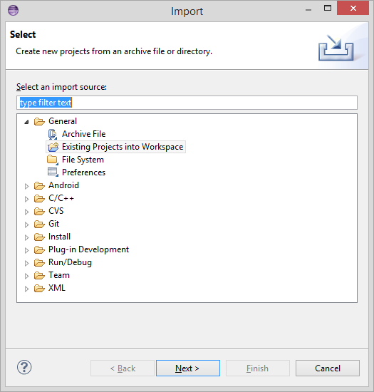
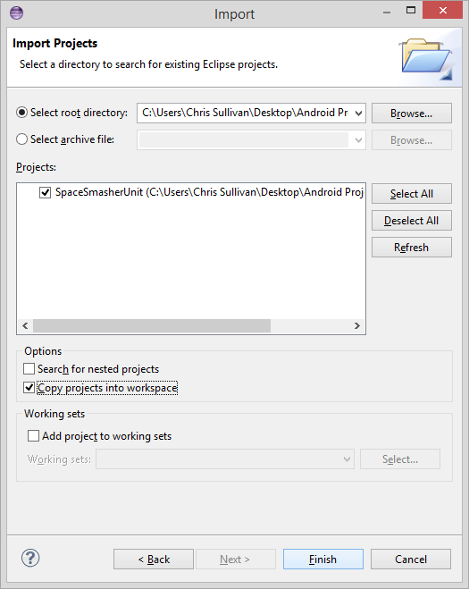
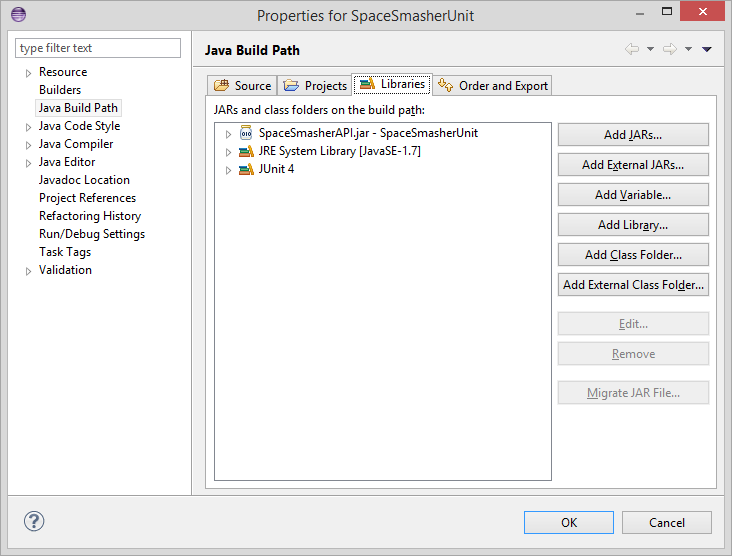
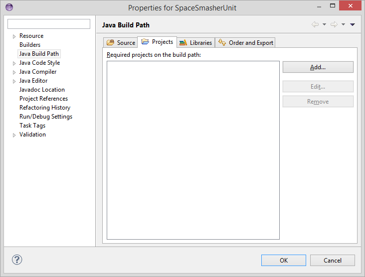

Table of Contents
Using Spacesmasher Test Suite
Chris Sullivan
June 7th, 2014
Setting up the Project
To set up the project in eclipse right-click on File > Import, the following window will appear.

Click Existing Projects into Workspace > Next and the Import screen will open.
Page 1
Browse to the root directory where the JUnit Suite is located and click Okay. Under options make sure
the Copy projects into workspace is checked and click Finish. SpaceSmasherUnit will now be located in
Eclipse's Package Manager to the left of the Eclipse IDE.

Importing the API
To test a new API remove the already imported SpaceSmasherAPI from the build path. To do this right
click the project > Build Path > Configure Build Path, then select the Libraries tab.

To remove the existing SpaceSmasherAPI select it and then click Remove. To add a new API click the Add External JARs... button and browse to the JAR file.
Page 2
Importing an Existing Project
To test an existing project in Eclipse right-click SpaceSmasherUnit > Build Path > Configure Build Path
and in the Properties dialog select the Projects Tab.

Click the Add... button and select all relevant projects to include in the test, and press Okay on the Required Projects dialog, and Okay again on the Properties Dialog.
Running the JUnit Suite
Finally to test the included API click on the SpaceSmasherUnit package > tests > runners > and right-click
on AllTestRunner. Then select Run As > Java Application.
Output of the test results will be created in the same directory as the SpaceSmasher package, if it is not
visible after the tests, right-click the package and select refresh. The output file will be statically
named SpaceSmasher JUnit Suite Results.html.
For further questions or help contact Chris Sullivan at themiszelus@gmail.com.
Page 3